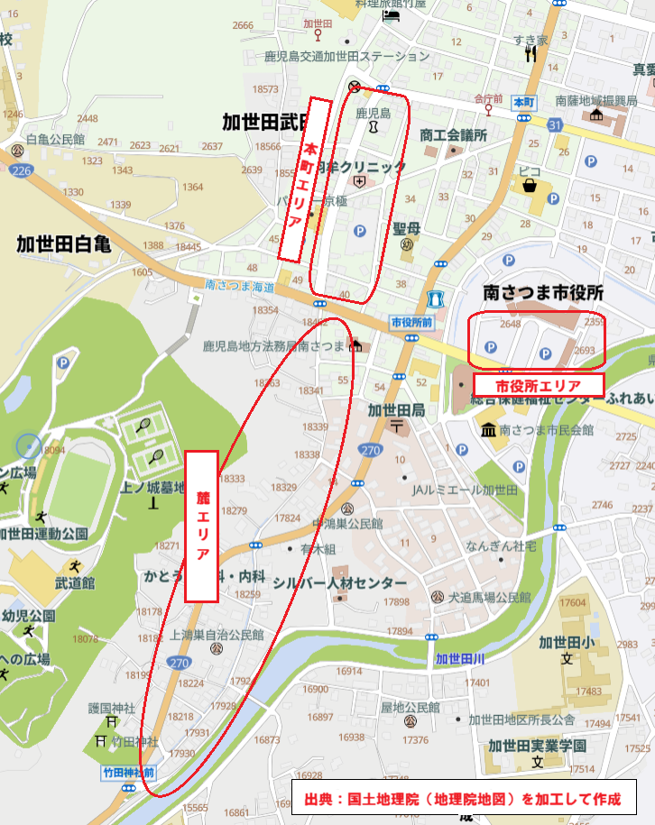

各エリアの位置や見どころを確認して、会場内の移動にお役立てください。紙のスタンプラリー版マップは、準備ができしだい追加できます。
各エリアのご案内
1 市役所エリア
砂の祭典のメイン会場です。砂像だけでなく、舞台を使用したさまざまなイベントや、おもしろ自転車などが行われます。
2 本町（ほんまち）エリア
「ゆめぴか本町通り」を中心としたエリアです。砂像の展示や本町通りを使った路上パフォーマンスなどのほか、飲食店もあります。また、南さつま市観光協会「きやったもんせ」では、地元特産品の販売などを行っています。
3 麓（ふもと）エリア
ゆめぴか本町通りから竹田神社へ向かって南へ下る道は、かつてあった別府城の城下町の名残であり、現存する武家屋敷群などを散策できるルートです。このエリアでは、砂像の展示のほか、旧家や公民館において、各所で体験コーナーや書道、フラワーアレンジメントなど、たくさんの種類の展示が行われています。ゆっくりと竹田神社まで歩いてみませんか。

現在地はご自身でご確認ください。困ったときは受付の係員におたずねください。

紙のスタンプラリー版が完成したら、この画面から切り替えて確認できます。